June 19, 2016
| Eric's brother Dan's son Dillon has
been in the Navy for more than a year. He was on his first 10-day
leave and we were blessed to spend some of that time with them. All
of Dan & Tracie's kids except Ashley were able to join us for an
afternoon of climbing at Stone Hill. A good time was had by
all. |
|
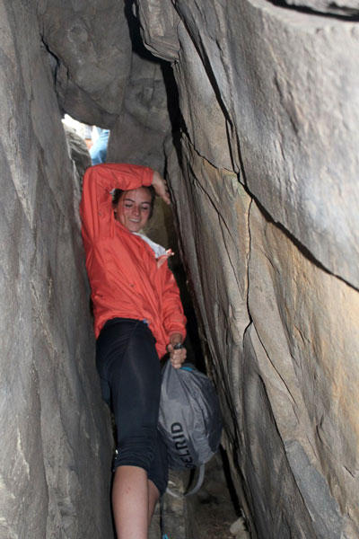 |
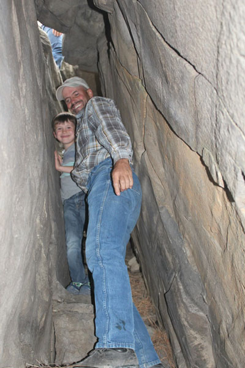 |
| Kaitlyn climbing down through a tight area to get to the good rock | Lane loved this part |
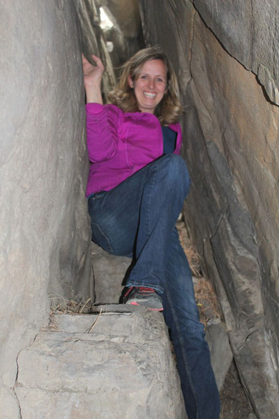 |
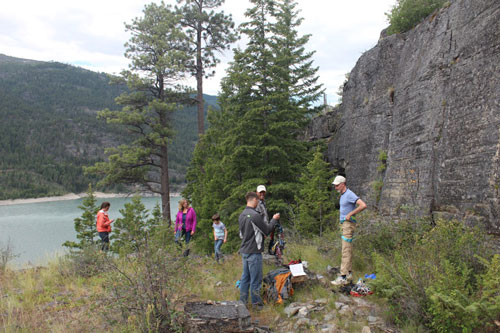 Getting situated for the first climb |
| Tracie looking pretty and being nimble as always | |
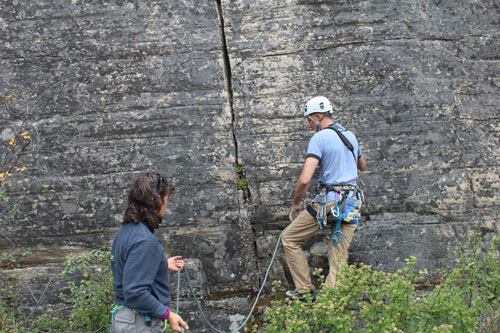 I belay Eric so he can set up the rope |
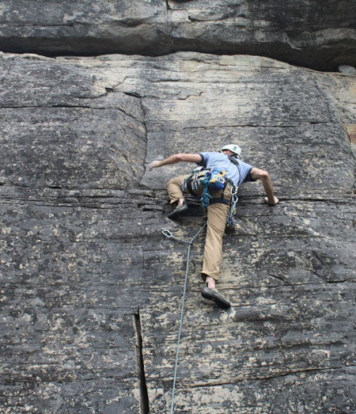 |
| It's all easy for Eric | |
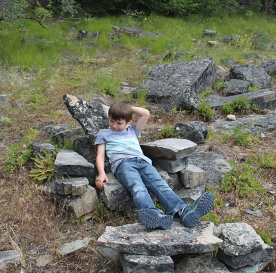 Lane, enjoying the stone recliner a previous climber left for him |
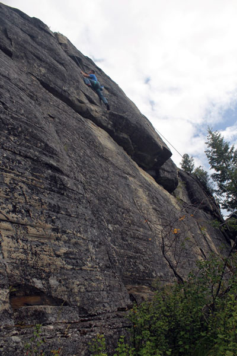 |
| Dillon attacks his first climb. He is a very strong young man! | |
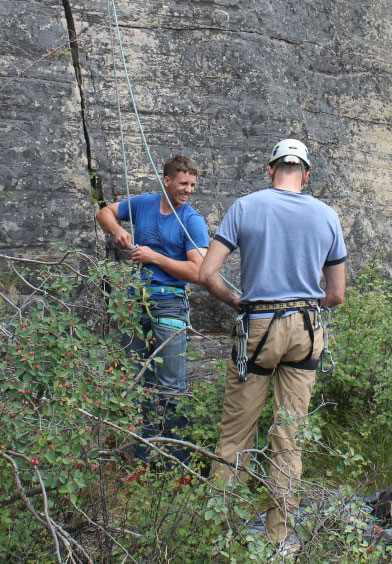 |
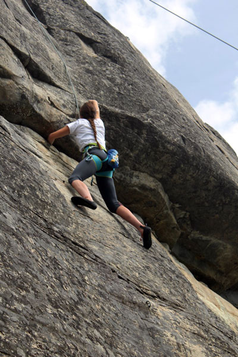 |
| I love that "I can't believe I'm still alive" face people get after their first climb. | Kaitlyn packs panels for Jeb & Dan's cement crew each summer
so you know this girl is strong too, she's also very flexible - which helps a lot. |
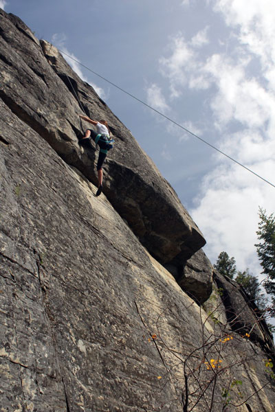 |
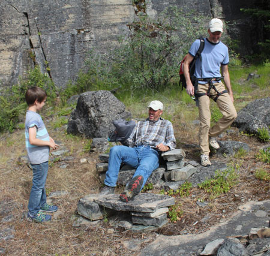 Dan didn't discover the recliner until we were about to leave, bummer dude! |
| She also placed in 3 events in the state track meet a few
weeks ago. Way to go Kaitlyn! |
|
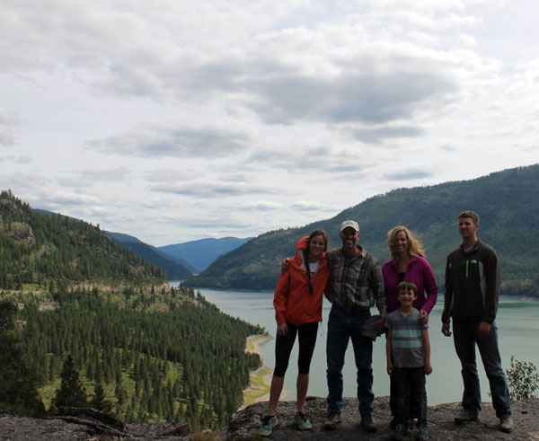 |
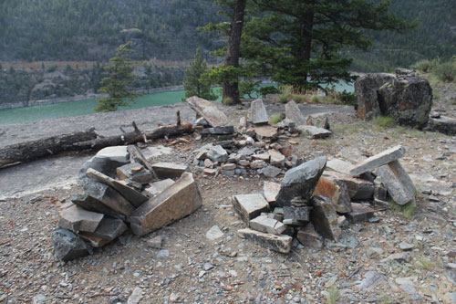 A conversational grouping of stone recliners on a scenic overlook where we were climbing. |
| I love this family picture of them. Wish Ashley, Cody, and Lily could be in it too! | |
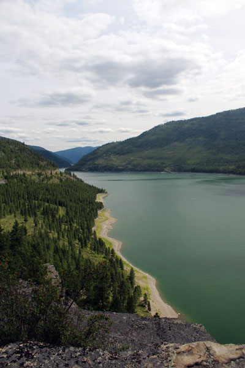 |
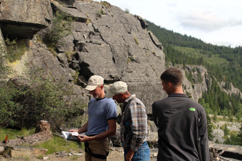 Choosing the perfect route |
| The aforementioned scenic overlook. | |
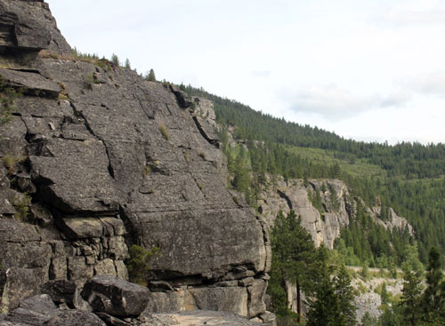 The rock seems to go on forever at Stone Hill. They say there are over 500 climbs here. |
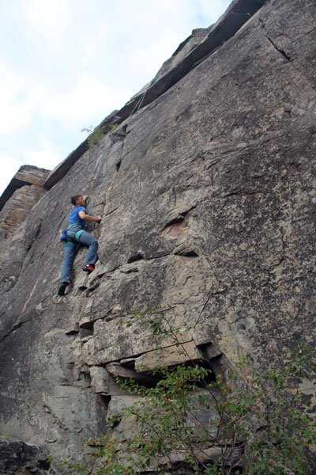 |
| Dillon hitting his stride. I think he'd become a climber
if he didn't have to go back to the Navy. |
|
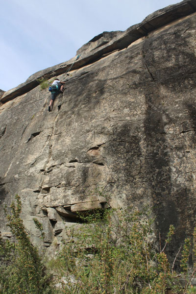 |
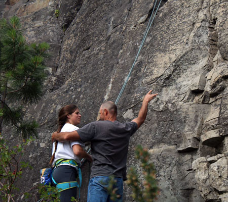 Dan celebrating her climbing feats |
| Kaitlyn nearing the top of her second climb | |
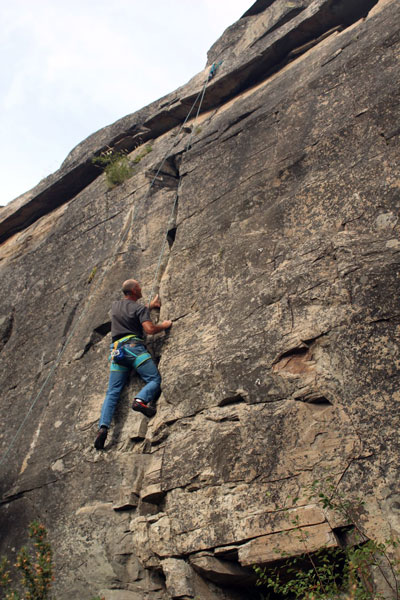 |
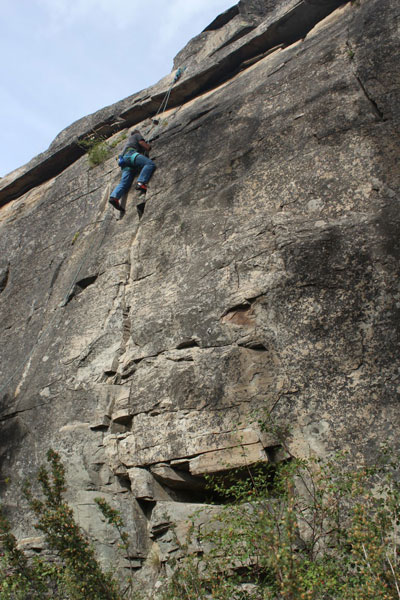 |
| Next Dan tried it and he was great! | Look at him go, it was like he was in a race to the top. |
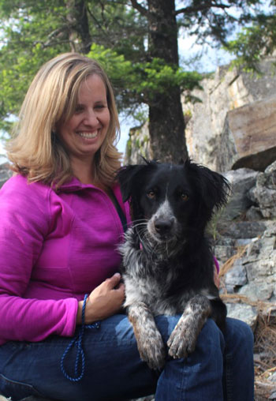 I love this picture of Tracie and Bella! |
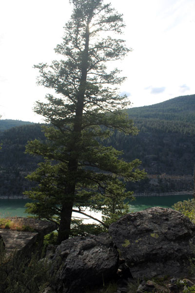 |
| Great day at Stone Hill | |